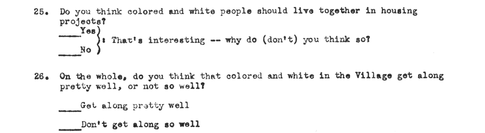
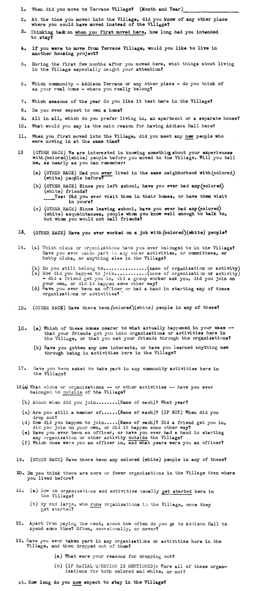
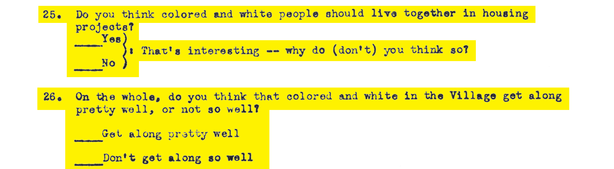

To study social dynamics within planned public housing communities, Merton, together with researchers Patricia Salter West and Marie Jahoda, conducted an extensive survey of residents at Addison Terrace, which they code-named “Hilltown.” Of the more than ninety questions that made up the survey, Merton and Lazarsfeld focused on only two in their 1954 paper.
Scroll to see all the other questions that were asked in the survey but not used in the final work.

